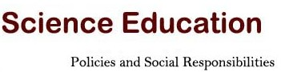

Important Deadlines:
July 15, 2012, Proposal abstract submission due (new extended deadline, see details below).
Proposal type: empirical research, position statement and conceptual analysis, poster demonstration and product exhibition.
July 30, 2012, Proposal acceptance notification (New date)
August. 30, 2012, Registration Form for Participant submission.
Sept. 15, 2012, Full paper submission due
Oct. 12-15, 2012, ICSE conference
Template for your full paper submission:
We are pleased to let you know that our English proceedings will be published by Springer. Please make sure that your full paper follows all the format requirements of this publisher. For quality assurance, we do not guarantee that every paper will be included in the proceeding; a group of selected experts will review all papers for inclusion in the proceedings. We have provided a paper template following Springer’s Instruction to Authors. You can either replace the content or use Word’s “Format Painter” feature to reformat your paper to align with this template.
For paper length, you can submit long papers of 10 pages including a reference list, short papers of 5 pages including a reference list, or poster papers of 2 pages including a reference list. These page lengths are based on the attached template (not the APA style). If you want to submit a paper with more pages, please first contact the editors at ICSE2012nanjingchina@gmail.com. Please make sure to include your paper ID number in all future correspondence. Here is how you should name your full paper submission following this format: ICSE2012PaperIDLongPaper/ShortPaper/Poster
Download the"ICSE2012 AuthorTemplateforEnglishPaper Submission"
Download the "GT Contributor - Consent to Publish"
** CONFERENCE ANNOUNCEMENT AND CALL FOR PROPOSALS **
International Conference on Science Education 2012 (ICSE2012, Nanjing, China)
Theme: "Science Education: Policies and Social Responsibilities"
Organizers: National Association for Science Education the Chinese Society of Education (CNASE)and Nanjing University
Co-Organizers:
Institute of Chemistry Education, Beijing Normal University;
Center for Teacher Professional Ability Development, Shaanxi Normal University;
China Research Institute for Science Popularization
Research Institute of Science Education, Guangxi Normal University
Sponsors: (To be added soon)
Conference Location: Nanjing University, Nanjing, China
Conference Dates: Oct. 12-15, 2012
Important Deadlines:
July 15, 2012, Proposal abstract submission due (new extended deadline, see details below).
Proposal type: empirical research, position statement and conceptual analysis, poster demonstration and product exhibition.
July 30, 2012, Proposal acceptance notification (New date)
August. 30, 2012, Registration Form for Participant submission.
Sept. 15, 2012, Full paper submission due
Oct. 12-15, 2012, ICSE conference
Proposal Submission Emails:
ICSE2012NanjingChina@gmail.com or
Papers of high quality will be included in a conference proceeding to be published by Springer.
Selected papers will be published in the Journal of Science Education and Technology (SSCI)。
(http://www.springer.com/education+%26+language/science+education/journal/10956?changeHeader
Conference Web Site: http://edu.nju.edu.cn/zbh/icse2012/
Contact person:
Mr. Jinlei Zhang (Phone: 86-25-8359-3259; 86-18260085771;
Emails:
ICSE2012NanjingChina@gmail.com Or ICSE2012NanjingChina@163.com)
** ABOUT THE CONFERENCE THEME **
Science education research is vital in the development of national science education policies, including standards, teacher development and public understanding of science. Science education researchers study the quality, feasibility, and alignment of standards at different levels with regard to curriculum materials, assessment practices, and science teacher certification requirements; they also seek ways to bridge formal and informal science education. Science education research thus affects a nation’s ability to fulfil its social responsibilities.
The ICSE 2012 conference welcomes science education researchers from around the world to exchange experiences, challenges, and strategies in science education research, particularly in areas related to development, implementation, and evaluation of science education standards, connections between formal and informal science education and to science teacher education in their countries. Sample research questions addressing the above theme are provided below; research addressing other related questions is also welcome:
Questions about National/Local Science Education Standards
1. How are standards in science education defined in your country?
2. What were the administrative processes when you developed the standards?
3. What were the challenges in developing the standards, and what strategies were used to address them?
4. What are the challenges when implementing the standards (e.g. curriculum and assessment development and teacher professional development) and the strategies to address them?
5. How might we consider science education standards at different stages at K-12 level and how can the standards be aligned with each other?
6. How do you assess the effectiveness of the science education standards in your country?
Questions about Science Teacher Education
1. What is the background and current status of primary science teacher education in your country?
2. What are the challenges in pre- and in-service science teacher education in your country? How do you address those challenges?
3. What are the measures to develop science teachers’ understanding of content knowledge and pedagogical content knowledge?
4. How do science teachers integrate ICT in teaching and student learning?
Questions about Public Science Education
1. Which organizations should take charge of informal science education?
2. What is the system in your country to ensure public access to science education (public science/citizen science)?
3. How does your country promote science literacy of its citizens?
4. How do people make use of informal science education resources for school science teaching and learning?
** INVITED SPEAKERS**
Prof. Sharon Lynch, George Washington University, USA, and president of NARST
Prof. Joseph Krajcik, Michigan State University, USA
Prof. Shigeki Kadoya, National Institute for Educational Policy
Research, Japan
Prof. Xiufeng Liu, State University of New York at Buffalo, USA
Mr. Peter Nentwig, Leibniz Institute for Science and Mathematics Education at the University of Kiel, Germany (IPN)
Dr. Ben Akpan, President, International Council of Associations for Science Education (ICASE)
Prof. Cho-Yee To, Chinese Hong Kong University, China and University of Michigan, USA
Prof. Shujin Peng, vice-President, National Association for Science Education, the Chinese Society of Education (CNASE), China
Prof. Zuoshu Wang, Capital Normal University, President, the Chinese Association for Non-Governmental Education
Prof. Prof. Fujun Ren, Director, China Research Institute for Science Popularization (CRISP), China
Prof. Dongchuan Yu, Director, Key Laboratory of Child Development and Learning Science, Ministry of Education, Southeast University, China
Prof. Hongshia Zhang, Dean, Institute of Education, Nanjing University, China
(More to be added)
** CONFERENCE ORGANIZATION**
International Organizing Committee
Prof. Shujin Peng, vice-President, National Association for Science Education, the Chinese Society of Education (CNASE), China, Co-Chair
Prof. Xiufeng Liu, State University of New York at Buffalo, USA, Co-Chair
Local Organizing Committee
Prof. Hongshia Zhang, Institute of Education, Nanjing University, China, Co-Chair
Prof. Baohui Zhang, Institute of Education, Nanjing University, China, Co-Chair
Program Committee, Dr. Yonggui Jiang, Chair
Financial Committee, Dr. Xiaohua Zong, Chair
Activity and technology support Committee, Dr. Yonggui Liu, Chair
Publicity Committee,Ms. Mao Cai, General Secretary, CNASE, China
Web Master, Jinlei Zhang
** CONFERENCE FEES AND LOGISTICS**
Conference registration fee: RMB 1500 (about $238); this includes food, drinks, conference room rentals, pick-up transportation, and other conference-related costs.
If you would like to go traveling or make other arrangements in China after the conference, we can refer to a tourism company to handle this. You will need to register for this before the registration deadline and pay by yourself. We also encourage you to buy travel insurance yourself.
** DEADLINE FOR PPROPOSAL ABSTRACTS**
For the first stage, proposal abstracts to be considered for inclusion in the technical program must be submitted by July 15, 2012 (Extended deadline).
The abstract should include presentation title, author names, institute, and contact emails.
The abstract submission shall be sent to the conference email address: ICSE2012NanjingChina@gmail.com or ICSE2012NanjingChina@163.com;
The file name might follow this format: ICSE2012AbstractYourCountrynameYourname.
The total length should be no more than 350 words.
Details on paper submission requirements and formats will be posted later at the ICSE 2012 web site, http://edu.nju.edu.cn/zbh/icse2012/.
The conference flyer and more information can also be found on the conference web site: http://edu.nju.edu.cn/zbh/icse2012/en/index.html
About the Chinese Science Education Association
The Chinese National Association for Science Education (中国教育学会科学教育分会, CNASE, http://www.cnase.org/) is a branch of the Chinese Society of Education (CSE). The Chinese Society of Education (CSE, http://www.cse.edu.cn) was founded on April 12, 1979. It is the first and largest national organization for mass educational academic affairs. CSE has 49 branches. The CNASE, as one of the branches, was founded in November 2009. It has three sub-committees at K-6, G7-12, and college levels, respectively. This is the national association of Chinese science educators, science education researchers, and other related scholars and administrators.
About Nanjing University
Nanjing University (http://www.nju.edu.cn) is one of the oldest and most prestigious institutions of higher learning in China. On May 20, 2012, the university will celebrate its 110th anniversary. In 2011, QS World University Rankings ranked Nanjing University 186th overall in the world. It is one of China’s key comprehensive universities under the direct supervision of the Ministry of Education. It dates from 1902 when it was known as Sanjiang Normal School. Today`s NJU consists of three beautiful campuses, Gulou, Pukou, and Xianlin.
About the Institute of Education, Nanjing University
The Institute of Education of Nanjing University (http://edu.nju.edu.cn) was set up at the end of 2009. It was built up on the bases of earlier Institute of Higher Education (1984-2002), and later Department of Educational Sciences and Administration (2002-2009), let alone its ancestor dated back as early as to the founding period of Nanjing University at the beginning of the 20th century. Currently, there are 19 staff members in this institute; among them are 17 full time academic faculties. Research areas and interests of the faculty include education administration and policies, curriculum and instruction studies at both K-12 and college levels, educational technology and learning sciences, educational sociology (especially regarding educational equity), student learning and development, cross-cultural studies in educational internationalization, history of education, and science education. There are four M.A. programs, two Ph.D. programs and one Ed.D. Program in this institute. The total enrolment of research students is around 130. The Institute of Education also hosts an academic quarterly journal: Higher Education Exploration and Research (in Chinese).
